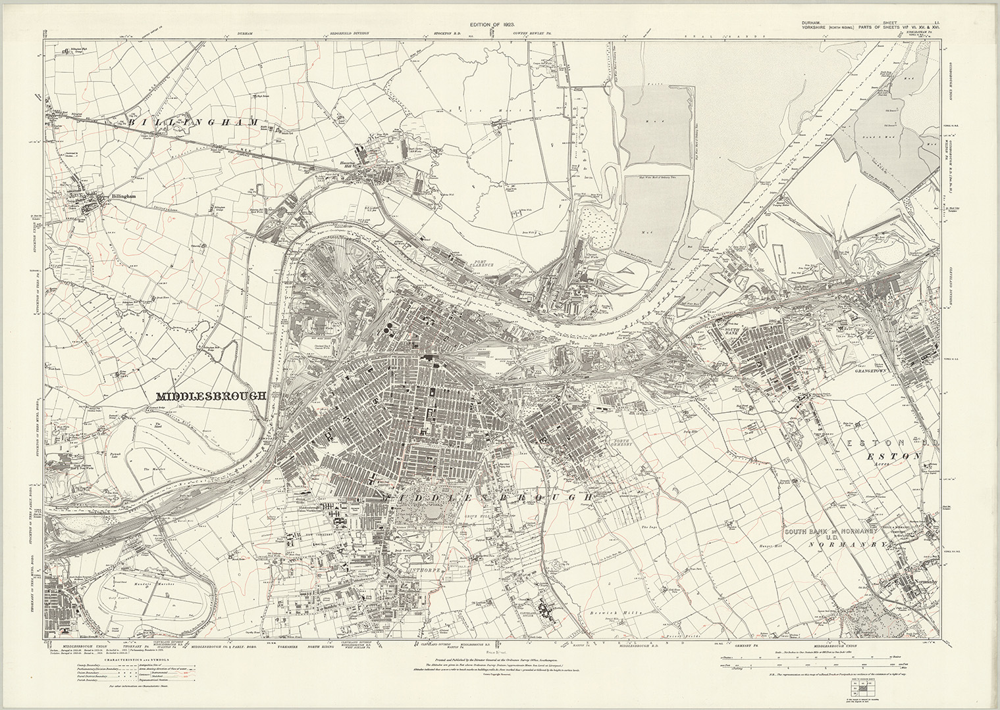

Click to see full image size
Ordnance Survey Map of Middlesbrough (1914)
This Ordnance Survey map dates from c.1914 and depicts Middlesbrough and the surrounding area in considerable detail. The sheet extends from Billingham to Normanby, with Eston and the Eston Hills also included. It covers much of the wider Tees Valley, showing the developing towns, villages, industrial works, railways, roads, waterways and surrounding countryside of the area in the early 20th century.